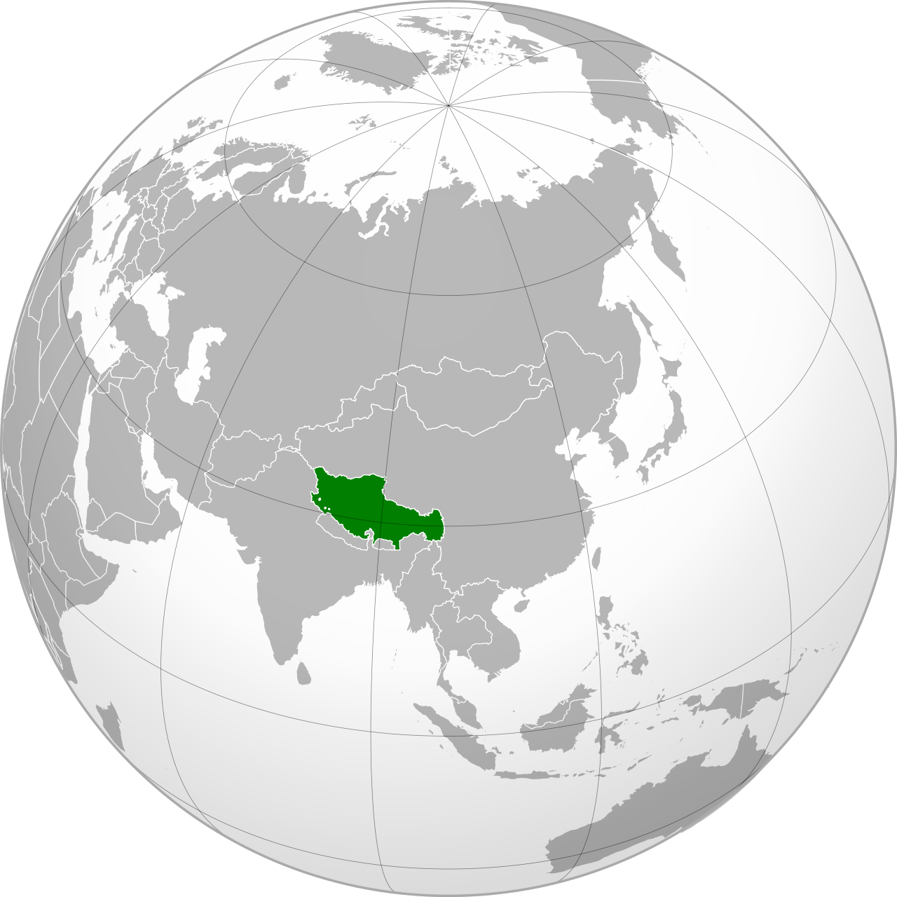

Volume XXI · 1913 — 1951
The Ganden Phodrang government's de facto independence — declared by the 13th Dalai Lama on his return from exile in February 1913, sustained for thirty-eight years between the collapse of the Qing and the entry of the People's Liberation Army into Chamdo in October 1950, formally ended by the 17-Point Agreement signed under duress on the 23rd of May 1951 and ratified in Lhasa that October.
Foreword

A theocratic monarchy in the Tibetan plateau, governed from Lhasa by the Ganden Phodrang — the administrative apparatus of the Dalai Lama, instituted by the Fifth Dalai Lama in 1642 under the patronage of the Khoshut Mongols and, from the early eighteenth century, under the formal protection of the Qing emperor. When the Qing fell in 1912, the Tibetan government expelled the imperial commissioner and the small Chinese garrison from Lhasa and declared itself unencumbered by the relationship.
Whether Tibet was an independent country during the period covered by this volume is the single most politically contested question in the literature, and we will not resolve it here. The case for independence: Tibet maintained its own currency, postage, passports and army; it conducted its own foreign relations with Britain, with the Republic of China and with Mongolia; it administered its territory through its own officials and its own legal system; it signed treaties in its own name (the Simla Convention of 1914, with the British and the Chinese, though the Chinese ultimately did not ratify it). The case against: no major foreign power accorded Tibet de jure recognition; the United Nations was never asked to seat a Tibetan delegation; the Republic of China continued to assert Chinese sovereignty over the territory throughout the period; the Tibetan government's own constitutional documents acknowledged a historical relationship of patron-priest with the Qing emperors that some authorities have argued was a relationship of suzerainty.
The Lost Lands position is that the period from 1913 to 1951 represents a state for the purposes of this library. Tibet conducted its affairs without any meaningful external interference for thirty-eight years. The country had a government, a territory, a population, an army, a foreign policy and a recognised head of state. Whether this de facto situation constituted a state in international law is a question that the politics of 1950 — Chinese, American, Indian, British — produced different answers to, and which historians and lawyers have continued to argue about. The political reality on the plateau was, however, that the Ganden Phodrang governed.
The narrative covers the long late-Qing twilight, the proclamation of 1913, the reformist 13th Dalai Lama, the interregnum after his death in 1933, the regents Reting and Taktra, the wartime neutrality through 1939–1945, and the People's Liberation Army's invasion of Chamdo in October 1950 — followed by the 17-Point Agreement, the Khampa uprisings, the flight of the 14th Dalai Lama to Dharamsala in March 1959, and the long postwar of the government-in-exile. Then we go to Lhasa — the Potala, the Jokhang, the Norbulingka — and the high road that gets you there.
The Book — eight chapters
After the book — three ways to travel inside Tibet
The Guide
Lhasa — the Potala Palace, the Jokhang Temple, the Barkhor circuit, the Norbulingka. Drepung, Sera and Ganden, the three great Gelug monasteries. Shigatse and the Panchen Lama's seat at Tashilhunpo. Gyantse. Chamdo. The Mount Kailash circuit. The Dharamsala government-in-exile.
The Routes
The Friendship Highway from Lhasa to Kathmandu through Gyantse, Shigatse and the Everest base camp; and the Sichuan–Tibet Highway from Chengdu through Kham — Litang, Batang, Chamdo — to Lhasa, the route the People's Liberation Army took in 1950.
The Errors
Tibet was not a "Shangri-La" before 1950. The 13th Dalai Lama was not a passive ruler. The 17-Point Agreement was not freely signed. The People's Liberation Army did not "liberate" anyone in 1950. Eight beliefs about Tibet politely laid to rest.